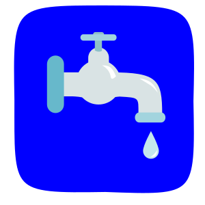
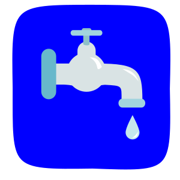

Serviços
 

|
Assessoria Ambiental
Prestar assistência contínua à pessoas físicas ou jurídicas, detentora de direitos de atividades que necessitem atenção à questão ambiental, visando o pleno funcionamento da atividade, evitando multas e embargos.
Elaboração de Estudos Ambientais
O Projeto Técnico de Recomposição da Flora (PTRF) consiste em um plano de ações detalhado, visando orientar os esforços do cliente que busca recuperar uma área degradada com vegetação nativa, a atingir êxito no processo. O Plano de Gerenciamento de Resíduos de Serviço de Saúde (PGRSS) consiste em um documento de gerenciamento, que visa ordenar a gestão deste tipo de resíduo desde a sua geração, até a destinação final ambientalmente adequada. O plano é elaborado para estabelecimentos como farmácias, consultórios odontológicos, hospitais, laboratórios, clínicas de médicas, necrotérios, postos de saúde, entre outros.
Geoprocessamento
Elaboração e/ou análise, por meio de programa de computador, de mapas turísticos, ambientais, rurais, locacionais, entre outros. Estes materiais servem como referenciais para análise do território (risco de enchente, análise de riscos, estudo de áreas passíveis ou não de uso e ocupação do solo, aponta localização e referência de pontos no espaço, entre outras análises), serve também para consultas, materiais gráficos para apresentações, e demais atividades que possam se associar.
Licenciamento
É um instrumento constante na legislação ambiental, com o objetivo de regularizar as atividades, potencial ou efetivamente poluentes ao ambiente, visando o enquadramento nas normativas e padrões vigentes. Os órgãos usualmente responsáveis por tais processos são, a nível federal o IBAMA, nível estadual o SUPRAM, e a nível municipal o CODEMA, quando este assume a responsabilidade de licenciamento, mediante assinatura de termo de responsabilidade junto ao estado.
Outorga
Instrumento normativo com o objetivo de registrar os usos de água dentro do estado (captação de água, despejo de esgoto, barramento para geração de energia). Tem o objetivo de registrar os usos e os quantitativos, para uma adequada gestão dos mananciais que visa fornecer água em quantidade e qualidade adequada a todos.
Regularização Ambiental
Ato no intuito de regularizar uma atividade em funcionamento, mas que se encontre em desacordo com os padrões e as normas ambientais vigentes. Se trata de regularizar o empreendimento e/ou atividade, junto ao órgão ambiental competente, para que o empreendedor desenvolva sua empresa de forma regular, evitando multas e embargos.